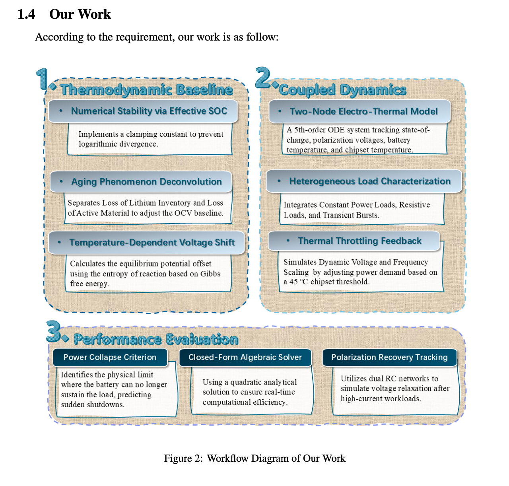
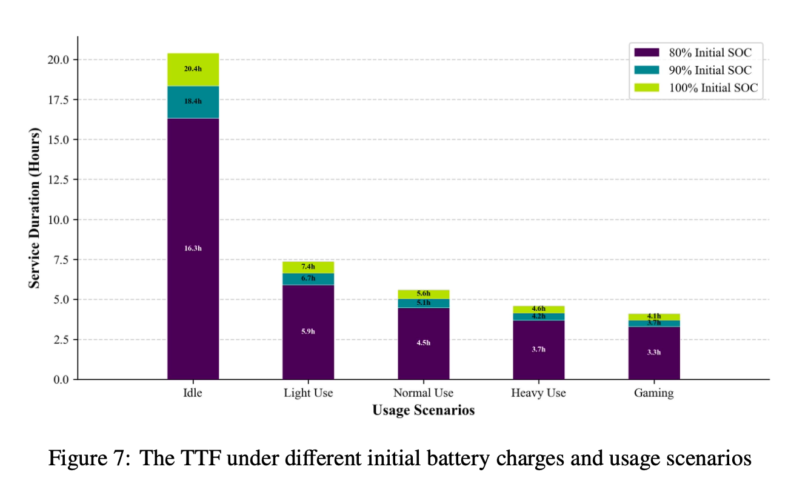
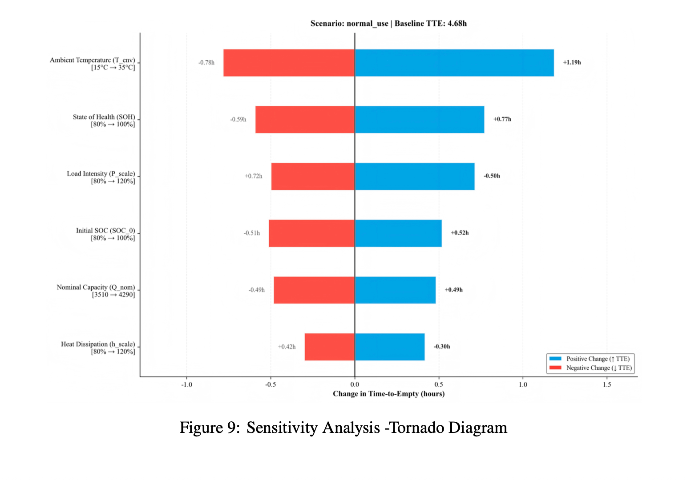
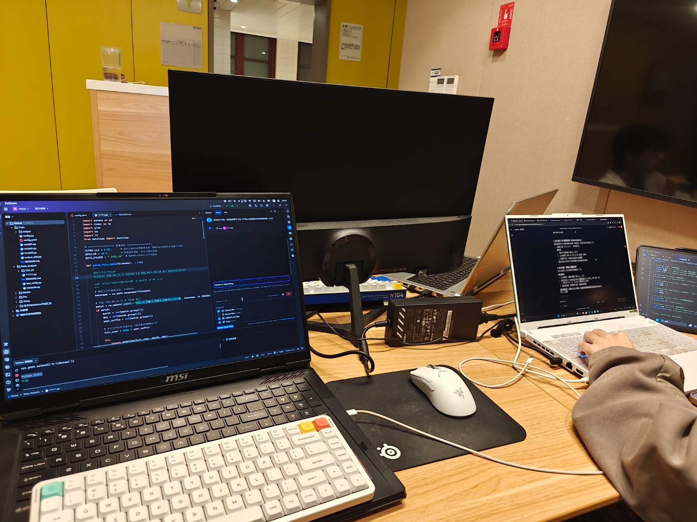

Project overview
For 2026 MCM Problem A, we modeled smartphone battery behavior under different usage conditions and investigated why a device can shut down even when some state of charge remains. The final framework combined an aging-aware open-circuit-voltage model, a stochastic hybrid load model, and a coupled electrical-thermal dynamic system.
My contribution
Research & model development
- Collected background information and data sources with the team.
- Participated in formulation and implementation of the battery model.
- Contributed to interpreting model behavior and quantitative results.
Paper development
- Co-authored the final competition paper.
- Helped organize the modeling logic, assumptions, results, and discussion into a complete technical report.
- Worked with the team through the final analysis and submission process.
Modeling framework
The final model was organized into three layers: a thermodynamic baseline that accounts for battery aging, coupled electro-thermal dynamics under heterogeneous smartphone loads, and performance evaluation for runtime and shutdown behavior.

Selected results
The model was calibrated against battery data and then evaluated across usage scenarios, parameter changes, and noisy inputs. These figures are selected directly from the final paper because they communicate the result more clearly than equation-heavy screenshots.


The final OCV fitting pipeline reported a global R² of 0.967 and an RMSE of 25.5 mV across the modeled aging range.
Competition process
The contest required rapid iteration between literature review, coding, model debugging, data analysis, visualization, and technical writing. I worked with the team throughout the modeling and paper-development process.

Competition result
Our submission, “Predicting Battery Performance and Unexpected Shutdowns via LLI/LAM Deconvolution and Electro-Thermal Dynamics,” received the Meritorious Winner award in the 2026 Mathematical Contest in Modeling.